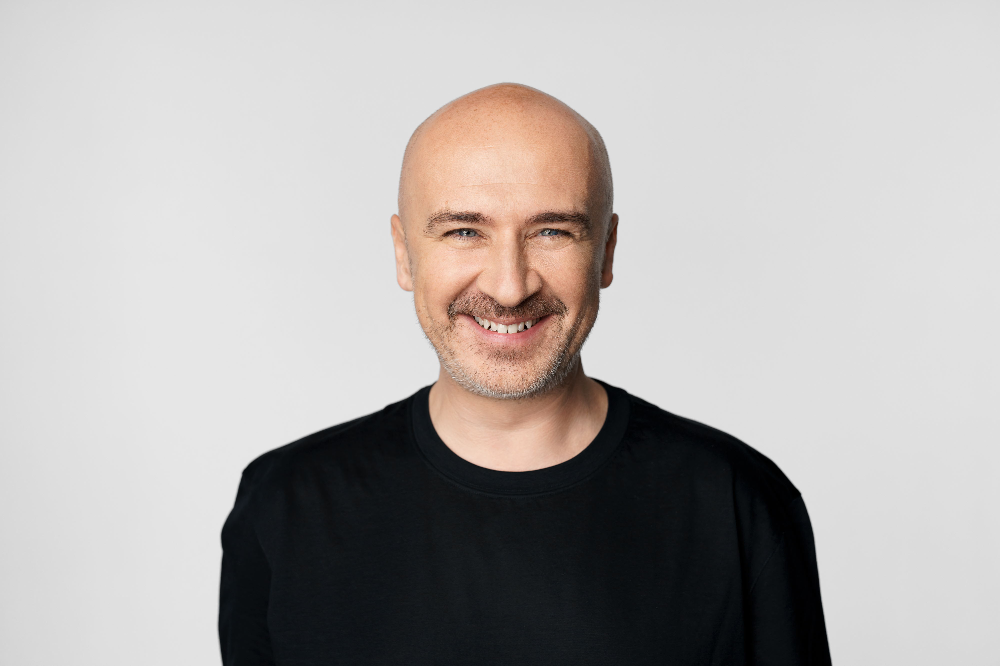

Mihai Dobrovolschi — Consiliere psihologică
Sunt Mihai Dobrovolschi — psiholog clinician. Fiecare dintre noi are destinul său, drumul său personal. Dar asta nu înseamnă că trebuie parcurs în singurătate. Sunt aici să te însoțesc.

About Me
Sunt Mihai Dobrovolschi, psiholog clinician, doctrand și asistent universitar stabilit in București, și îți pot oferi un spațiu în care îți poți explora gandurile, emoțiile și provocările fără a fi judecat, în deplină siguranță și confidențialitate.
Anii de experiență clinică îmi oferă multe puncte de perspectivă, care pot aduce adâncime dar și prospețime ședințelor. Am avut mereu o latură intuitivă, iar cercetarea pe care o fac în ultimii ani a completat metoda mea, care integrează cunoștințele științifice cu o conectare umană adevărată.
Poate te chinui cu anxietatea, poate treci prin schimbări, pierderi, poate doar cauți o înțelegere de sine mai adâncă sau mai înaltă, te pot însoți în această călătorie.
Cu ce ajut
Griji persistente, gânduri galopante și tensiunea pot deveni copleșitoare. Împreună vom dezvolta strategii practice pentru întreruperea buclelor de gândire, calmarea minții și recâștigarea sentimentului de control.
Learn more →Când tristețea predomină și nu mai ai motivație, e greu să mai ai speranță. Motivele pot fi multe, cunosc cea mai mare parte dintre ele și te pot ajuta să te reconectezi cu sensul și vitalitatea din tine.
Learn more →Creierul are nevoie de timp și ghidare pentru a se adapta la o viață nouă, iar inima are, uneori, nevoie de "doliu" pentru o fostă versiune a ta. Te pot ajuta să navighezi ape necunoscute.
Learn more →Putem folosi mai multe metode prin care să explorăm în siguranță părți ale psihicului cu care nu vrem mereu să luăm contact. Analiza viselor, emdr, expunerea sunt doar câteva dintre ele.
Learn more →Metoda mea
Integrez mai multe metode terapeutice și croiesc pentru fiecare caz în parte o abordare personală, care să fie potrivită tipului de om și momentului din viață în care se află. În același timp am credința că relația terapeutică în sine funcționează uneori aproape misterios spre refacerea calităților naturale ale oamenilor.
Fiecare plan de tratament este personalizat pentru tine și ritmul tău, pentru provocarea ta și pentru momentul în care te afli
Tu ești expert în a fi tu. Eu aduc priceperea clinică, tu aduci povestea ta.
Nu intră în atribuțiile mele să te judec. Drumul este greu pentru toți, și dacă te pot ajuta, o voi face.
Cum funcționează
Completează formularul sau scrie-mi un mail.
Vom avea o scurtă conversație în care ambii vom pune întrebări pentru a vedea dacă suntem portiviți unul pentru celălalt. Dacă nu, te voi ghida spre o alternativă mai potrivită.
Programează-ți prima ședință și începe călătoria spre claritate și creștere.
Începe
Primul pas e uneori mai greu. Nu există "un mod corect de-a începe o terapie". Contactează-mă și hai să vorbim împreună despre cum ar trebui să fie terapia ca să fie valoroasă pentru tine.
Vei afla pe mail numărul meu, pentru un contact mai dinamic
dobro@dobro.ro
București, zona Eminescu - Dacia · sunt posibile și ședințe online
Frequently Asked Questions
Dacă te confrunți cu suferință emoțională persistentă, dificultăți în a face față schimbărilor din viață, provocări în relații sau pur și simplu vrei să te înțelegi mai bine, terapia poate fi de un real ajutor. O primă consultație este o modalitate excelentă de a explora dacă acesta este pasul potrivit pentru tine.
Prima ședință este pentru a ne cunoaște. Vom discuta despre ce te aduce în terapie, istoricul tău, obiectivele tale și, doar în cazul în care știi, ce ți-ai dori să transformi. Este o conversație colaborativă — nu există presiunea de a împărtăși mai mult decât te simți confortabil.
Da, ofer ședințe online prin majoritatea platformelor sigure și confidențiale. Multe studii găsesc efecte comparabile între ședințele cu prezență fizică și cele online. Cu toate astea, consider că o relație umană directă rămâne un ingredient necesar al unei vieți implinite.
Acest lucru variază considerabil în funcție de obiectivele și nevoile tale. Unele persoane constată ameliorare în câteva săptămâni, altele beneficiază de sprijin pe termen mai lung. Vom evalua periodic progresul tău și vom ajusta împreună planul.
Sunt bucuros să discut tarifele în cadrul primei consultații. Cu siguranță pot pune la dispoziție orice documente legale pentru decontarea serviciilor în cazul asigurărilor. De asemenea, pot exista opțiuni cu tarif flexibil pentru cei care au nevoie.
Absolut. Confidențialitatea este fundația lucrului nostru împreună. Tot ce vom discuta va rămâne între noi, cu puține excepții dictate de lege și Codul Etic (de exemplu, prevenirea unei catastrofe). Îți voi explica aceste reguli înainte de a începe.